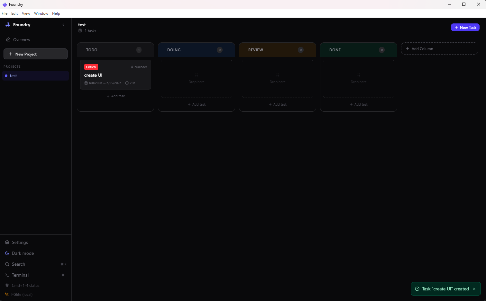

Interface
Beautiful by Default
Dark & light themes. Responsive Kanban. Built-in terminal.

Kanban Board

Project Overview

Settings & MCP Config
Foundry is the AI-native task manager. Kanban boards for humans. MCP server for AI agents. One shared workspace, powered by local SQLite. Works offline. Your data stays yours.
Humans drag cards. AI agents call tools. Same source of truth.
Drag-and-drop columns with customizable workflows. Todo → Doing → Review → Done. Assign priorities, dates, tags, and notes.
28 tools exposed via stdio transport. AI agents can create, update, search, and analyze tasks natively. OpenCode, Claude, Cursor, Copilot ready.
All data in a single SQLite file on disk. No cloud services. No accounts. Fully offline. Your data never leaves your machine.
Cmd+K search, Cmd+1-4 status moves, Cmd+N new task, Cmd+Shift+R reload, Cmd+B sidebar. Every action has a shortcut.
Dark & light themes. Responsive Kanban. Built-in terminal.

Kanban Board
Project Overview
Settings & MCP Config
Watch Foundry in motion — Kanban, MCP, and more.
Universal stdio transport. One config works across 6+ AI platforms.
{
"mcp": {
"foundry": {
"type": "local",
"command": ["node", "/path/to/Foundry/apps/mcp-server/dist/server.js"],
"enabled": true
}
}
}Free and open-source. Cross-platform. No sign-up.
Also available on GitHub Releases — scroll for past versions.